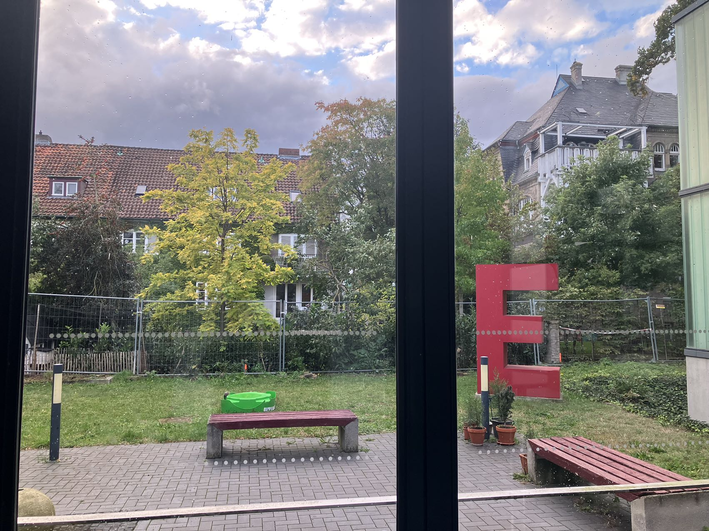

<!DOCTYPE html>
<html lang="en">
    <head>
        <meta charset="UTF-8">
        <meta name="viewport" content="width = device-width, initial-scale = 1.0">
        <meta http-equiv="X-UA-Compatible" content="ie=edge">
        <title>Wang-Wei Yu</title>
        <!-- reset -->
        <link rel="stylesheet" href="./css/reset.css">
        <!-- public -->
        <link rel="stylesheet" href="./css/base.css">
        <!-- current -->
        <link rel="stylesheet" href="./css/ACGCoffee.css">
        <!-- font -->
        <link rel="icon" href="./pic/favicon.ico">
        <!-- Js -->
        <script src="./js/app.js"></script>
        <script src="https://polyfill.io/v3/polyfill.min.js?features=es6"></script>
        <script id="MathJax-script" async src="https://cdn.jsdelivr.net/npm/mathjax@3/es5/tex-mml-chtml.js"></script>
</html>

<body>
  <body>
    <div class="topbar-wrapper">
        <div class="topbar w clearfix">
            <nav class="nav-button">
                <div class="bg"></div>
                <button class="button"></button>
            </nav>
            <ul class="service">
                <li><a href="./index.html">Wang-Wei Yu</a></li>
            </ul>

            <ul class="service1">
                <li><a href="./me.html">About Me</a></li>
                <li class="line">|</li>
                <li><a href="./CV.html">CV</a></li>
                <li class="line">|</li>
                <li><a href="./reseach.html">Reseach</a></li>
                <li class="line">|</li>
                <li><a href="./publications.html">Publications</a></li>
                <li class="line">|</li>
                <li><a href="./seminars.html">Seminars</a></li>
                <li class="line">|</li>
                <li><a id="current" href="./acgCoffee.html">ACG Coffee</a></li>
            </ul>
        </div>
    </div>

    <div class="webcover w">
        
    </div>
</body>
  
<div class="window"> 
  <div class="fp clearfix">

    <div class="mainTitle">
        <h1>ACG Coffee</h1> 

        <h2>"A" for Astrophysics & "C" for Cosmology & "G" for Gravity</h2>

        <h3>Date: 19 Dec., 2023</h3>

        <h4><a href="./acgCoffeeList.html">For more</a></h4>
    </div>

    <div class="ArXiv">
        <h1>arXiv I interested everyday</h1>
        <h2><a href="https://arxiv.org/abs/2312.10792">[ArXiv:2312.10792]</a>Probing the galactic and extragalactic gravitational wave backgrounds with space-based interferometers</h2>
        <h3>by <i>Giorgio Mentasti</i> et al. </h3>
        <p>
        <ul>
            <li>both LISA and LISA with Taiji cannot put tight constraints on the harmonic coefficients for realistic models of the galactic SGWB.<li>
            <li>the discrimination between a galactic signal of known morphology but unknown overall amplitude and an isotropic extragalactic SGWB component of astrophysical origin.<li>
            <li>in the LISA-only case, the analysis in the frequency domain (under the assumption of a time average of data taken homogeneously across the year) provides a nearly identical determination of the two amplitudes as compared to the optimal analysis.<li>
            
        </ul>
        </p>
        <h2><a href="https://arxiv.org/abs/2312.11351">[ArXiv:2312.11351]</a>Disentangling photon rings beyond General Relativity with future radio-telescope arrays</h2>
        <h3>by <i>Raúl Carballo-Rubio</i> et al. </h3>
        <p>
        <ul>
            <li>New physics beyond General Relativity can modify image features of black holes and horizonless spacetimes and increase the separation between photon rings<li>
            <li>synthetic images consisting of two thin rings.<li>
            
        </ul>
        
        </p>
        <h2><a href="https://arxiv.org/abs/2303.17185">[ArXiv:2303.17185]</a>Tests of Classical Gravity with Radio Pulsars</h2>
        <h3>by <i>Zexin Hu</i> et al. </h3>
        <p>
            <ul>
                <li>various recent strong-field tests of the general relativity (GR) from the Hulse-Taylor pulsar PSR B1913+16, the double pulsar PSR J0737−3039, and the triple pulsar PSR J0337+1715.<li>
                <li>the inner structure of neutron stars (NSs) that may influence some gravity tests, and have used the scalar-tensor gravity and massive gravity theories as examples to demonstrate the usefulness of pulsar timing in constraining specific modified gravity theories.<li>
                
            </ul>
            
        </p>
        <h2><a href="https://arxiv.org/abs/2307.16349">[ArXiv:2307.16349]</a>MCMC Marginalisation Bias and ΛCDM tensions</h2>
        <h3>by <i>Eoin Ó Colgáin</i> et al. </h3>
        <p>
        <li>This confirms a discrepancy reported earlier with fresh methodology.<li>
        </p>
        <h2><a href="https://arxiv.org/abs/2312.10050">[ArXiv:2312.10050]</a>Mapping the Universe with Gamma-Ray Bursts</h2>
        <h3>by <i>Istvan Horvath</i> et al. </h3>
        <p>
            <li>They explore large-scale cosmic structure using the spatial distribution of 542 gamma-ray bursts (GRBs) having accurately measured positions and spectroscopic redshifts.<li>
            <li>Their method investigated the 542 GRBs having observed redshift.<li>
            
        </p>
        <h2><a href="https://arxiv.org/abs/2312.10232">[ArXiv:2312.10232]</a>Unraveling TeV Halos with the Cherenkov Telescope Array</h2>
        <h3>by <i>Dan Hooper</i> et al. </h3>
        <p>
            <li>the ability of the Cherenkov Telescope Array (CTA) to measure the properties of TeV halos, focusing on the case of the nearby Geminga pulsar.<li>
            
        </p>
        <h2><a href="https://arxiv.org/abs/2312.10334">[ArXiv:2312.10334]</a>"SNe Ia twins for life" towards a precise determination of H0</h2>
        <h3>by <i>"SNe Ia twins for life" towards a precise determination of H0</i> and <i> Jonay I. González Hernández </i></h3>
        <p>
            <ul>
                <li> a good agreement with the distance estimates for M101 and NGC 5643 with the TRGB method<li>
                <li>the Hubble tension can arise as well from the corrections of peculiar velocities of nearby galaxies which are not in the Hubble flow. <li>
            </ul>
        </p>
        <h2><a href="https://arxiv.org/abs/2312.10455">[ArXiv:2312.10455]</a>Gravitational waves from cosmic superstrings and gauge strings</h2>
        <h3>by <i>Danny Marfatia</i> and <i> Ye-Ling Zhou </i> </h3>
        <p>
            <ul>
                <li> the latest data from PTAs and show that superstring networks are consistent with 32 nHz data from NANOGrav, but are in tension with 3.2 nHz data unless the strings evolve in only about 10% of the volume of the higher-dimensional space.<li>
                <li>gauge string networks are excluded by NANOGrav-15 data at 3σ, they are completely compatible with EPTA and PPTA data. <li>
                
            </ul>
            
        </p>
        <h2><a href="https://arxiv.org/abs/2310.13118">[ArXiv:2310.13118]</a>Review of the Gravitomagnetic Clock Effect</h2>
        <h3>by <i>Lorenzo Iorio</i> and <i> Bahram Mashhoon </i></h3>
        <p>
             both the theoretical and observational aspects of such an intriguing consequence of Einstein's theory of gravitation.
        </p>
        <h2><a href="https://arxiv.org/abs/2312.10241">[ArXiv:2312.10241]</a>Accuracy limitations of existing numerical relativity waveforms on the data analysis of current and future ground-based detectors</h2>
        <h3>by <i>Aasim Jan</i> et al. </h3>
        <p>
            <ul>
                <li>injecting a lower resolution simulation tends to cause a downward shift in the recovered chirp mass and mass ratio posteriors.<li>
                <li>a measure to predict the necessary numerical resolution for unbiased parameter estimation and use it to predict that current waveforms are suitable for equal and moderately unequal mass binaries for both detectors.<li>
            </ul>
        </p>
        <h2><a href="https://arxiv.org/abs/2312.10678">[ArXiv:2312.10678]</a>Weak gravitational lensing and shadow of a GUP-modified Schwarzschild black hole in the presence of plasm</h2>
        <h3>by <i>Husanboy Hoshimov</i> et al. </h3>
        <p>
            Weak gravitational lensing.
        </p>
        <h2><a href="https://arxiv.org/abs/2312.11131">[ArXiv:2312.11131]</a>Towards classifying the interior dynamics of charged black holes with scalar hair</h2>
        <h3>by <i>Rong-Gen Cai</i> et al. </h3>
        <p>
            <ul>
                <li>analytical approach to investigate the internal dynamics of charged black holes with scalar hair in general spacetime dimensions.<li>
                <li>results are corroborated by numerical solutions to the full equations of motion, including a top-down model from supergravity.<li>
            </ul>
            
        </p>
        
        
    <div>
<div>
</div>
  <a style="display: none; font-size: 40px;" href = "javascript:;" class="backToTop" title="Back to Top" id="backToTop"> &#8682; </a>
</body>
</html>
